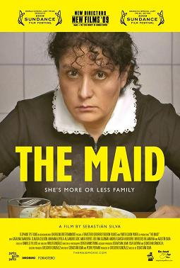

Sebastian Silva
2009
115 minutes
You've never actually had or hired a maid yourself, but much of your life has been maid adjacent. You've found yourself defending the practice of paying someone else to clean your house or office to other people depressingly often. Many people find the entire concept inherently degrading, having some sort of virtuous idea that human beings have a moral responsibility to do their own chores, which somehow makes them humble and virtuous. You've always considered this phony progressivism. People talk a big game about how dehumanizing housework is because they find anyone who cleans for someone else subhuman by nature. The minute you take a mop out of her hands and put her on an assembly line, however, all this concern evaporates. She's finally a member of the respectable workforce.
You've had a surprising amount of arguments with people about concepts like Wages for Housework and other early lefty feminist ideas about the matter. Their eyes glaze over. For them it is as simple as "the mop is bad, the assembly line is good". Several of these people in other conversations have defended sex work while decrying domestic housework as inherently demeaning, even when done for people with disabilities who can't do it for themselves. That task should apparently be left to family members or done by unpaid volunteers for church charities or other non-profits. As soon as you are paid to do it, you are a broom-whore.
Your grandmother cleaned people's houses for extra dough. Your mother and father ran their own cleaning business for awhile before you were born. Your belated wife was a Merry Maid in college. And, speaking of sex work, you've known multiple people who have done nude or scantily-clad versions of the job, acting as naked maids or doing it in skimpy costumes--which is a bit more performative but apparently still involved a lot of actual scrubbing work. Their descriptions of this sounded a bit degrading, to be honest, but it also sounds like that was at least partially the point. In any case, in none of those cases did it sound like it involved any actual contact.
For all your strong beliefs on this, you've never been able to bring yourself to have a maid clean your living space. As much as you've made fun of others for being this way, you're still the kind of person who feels the need to clean your house before the maid comes over so you're not embarrassed by the mess. And you're never quite sure what a fair rate is to reimburse someone for this. One of the "naked maid" people even offered to come over and do it in or out of costume, to your great surprise, but you were doubly unable to determine a fair rate of reimbursement for this.
You've never paid for sex either, for that matter. Just throwing that out there.
Time to choose something different: